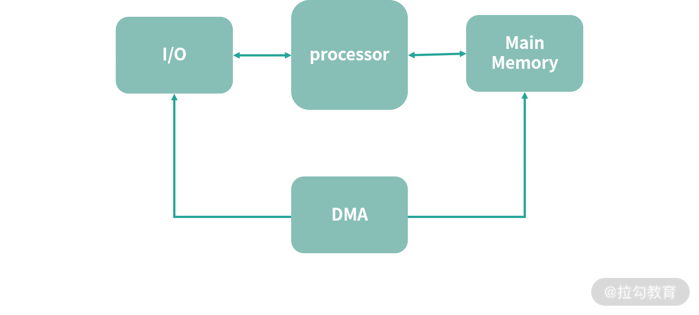
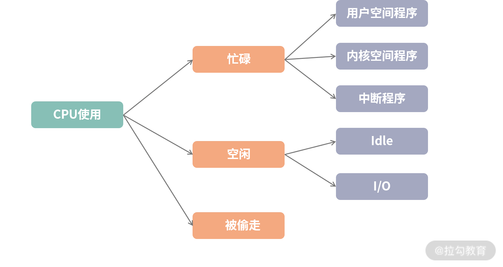
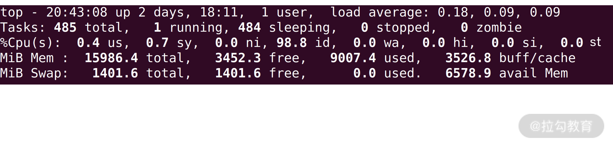

- 00 开篇词 为什么大厂面试必考操作系统？.md.html
- 00 课前必读 构建知识体系，可以这样做！.md.html
- 01 计算机是什么：“如何把程序写好”这个问题是可计算的吗？.md.html
- 02 程序的执行：相比 32 位，64 位的优势是什么？（上）.md.html
- 03 程序的执行：相比 32 位，64 位的优势是什么？（下）.md.html
- 04 构造复杂的程序：将一个递归函数转成非递归函数的通用方法.md.html
- 05 存储器分级：L1 Cache 比内存和 SSD 快多少倍？.md.html
- 05 (1) 加餐 练习题详解（一）.md.html
- 06 目录结构和文件管理指令：rm -rf 指令的作用是？.md.html
- 07 进程、重定向和管道指令：xargs 指令的作用是？.md.html
- 08 用户和权限管理指令： 请简述 Linux 权限划分的原则？.md.html
- 09 Linux 中的网络指令：如何查看一个域名有哪些 NS 记录？.md.html
- 10 软件的安装： 编译安装和包管理器安装有什么优势和劣势？.md.html
- 11 高级技巧之日志分析：利用 Linux 指令分析 Web 日志.md.html
- 12 高级技巧之集群部署：利用 Linux 指令同时在多台机器部署程序.md.html
- 12 (1)加餐 练习题详解（二）.md.html
- 13 操作系统内核：Linux 内核和 Windows 内核有什么区别？.md.html
- 14 用户态和内核态：用户态线程和内核态线程有什么区别？.md.html
- 15 中断和中断向量：Javajs 等语言为什么可以捕获到键盘输入？.md.html
- 16 WinMacUnixLinux 的区别和联系：为什么 Debian 漏洞排名第一还这么多人用？.md.html
- 16 (1)加餐 练习题详解（三）.md.html
- 17 进程和线程：进程的开销比线程大在了哪里？.md.html
- 18 锁、信号量和分布式锁：如何控制同一时间只有 2 个线程运行？.md.html
- 19 乐观锁、区块链：除了上锁还有哪些并发控制方法？.md.html
- 20 线程的调度：线程调度都有哪些方法？.md.html
- 21 哲学家就餐问题：什么情况下会触发饥饿和死锁？.md.html
- 22 进程间通信： 进程间通信都有哪些方法？.md.html
- 23 分析服务的特性：我的服务应该开多少个进程、多少个线程？.md.html
- 23 (1)加餐 练习题详解（四）.md.html
- 24 虚拟内存 ：一个程序最多能使用多少内存？.md.html
- 25 内存管理单元： 什么情况下使用大内存分页？.md.html
- 26 缓存置换算法： LRU 用什么数据结构实现更合理？.md.html
- 27 内存回收上篇：如何解决内存的循环引用问题？.md.html
- 28 内存回收下篇：三色标记-清除算法是怎么回事？.md.html
- 28 (1)加餐 练习题详解（五）.md.html
- 29 Linux 下的各个目录有什么作用？.md.html
- 30 文件系统的底层实现：FAT、NTFS 和 Ext3 有什么区别？.md.html
- 31 数据库文件系统实例：MySQL 中 B 树和 B+ 树有什么区别？.md.html
- 32 HDFS 介绍：分布式文件系统是怎么回事？.md.html
- 32 (1)加餐 练习题详解（六）.md.html
- 33 互联网协议群（TCPIP）：多路复用是怎么回事？.md.html
- 34 UDP 协议：UDP 和 TCP 相比快在哪里？.md.html
- 35 Linux 的 IO 模式：selectpollepoll 有什么区别？.md.html
- 36 公私钥体系和网络安全：什么是中间人攻击？.md.html
- 36 (1)加餐 练习题详解（七）.md.html
- 37 虚拟化技术介绍：VMware 和 Docker 的区别？.md.html
- 38 容器编排技术：如何利用 K8s 和 Docker Swarm 管理微服务？.md.html
- 39 Linux 架构优秀在哪里.md.html
- 40 商业操作系统：电商操作系统是不是一个噱头？.md.html
- 40 (1)加餐 练习题详解（八）.md.html
- 41 结束语 论程序员的发展——信仰、选择和博弈.md.html
- 捐赠
23 分析服务的特性：我的服务应该开多少个进程、多少个线程？
在平时工作中，你应该经常会遇到自己设计的服务即将上线，这就需要从整体评估各项指标，比如应该开多少个容器、需要多少 CPU 呢？另一方面，应该开多少个线程、多少个进程呢？——如果结合服务特性、目标并发量、目标吞吐量、用户可以承受的延迟等分析，又应该如何调整各种参数？
资源分配多了，CPU、内存等资源会产生资源闲置浪费。资源给少了，则服务不能正常工作，甚至雪崩。因此这里就产生了一个性价比问题——这一讲，就以“我的服务应该开多少个进程、多少个线程”为引，我们一起讨论如何更好地利用系统的资源。
计算密集型和 I/O 密集型
通常我们会遇到两种任务，一种是计算、一种是 I/O。
计算，就是利用 CPU 处理算数运算。比如深度神经网络（Deep Neural Networks），需要大量的计算来计算神经元的激活和传播。再比如，根据营销规则计算订单价格，虽然每一个订单只需要少量的计算，但是在并发高的时候，所有订单累计加起来就需要大量计算。如果一个应用的主要开销在计算上，我们称为计算密集型。
再看看 I/O 密集型，I/O 本质是对设备的读写。读取键盘的输入是 I/O，读取磁盘（SSD）的数据是 I/O。通常 CPU 在设备 I/O 的过程中会去做其他的事情，当 I/O 完成，设备会给 CPU 一个中断，告诉 CPU 响应 I/O 的结果。比如说从硬盘读取数据完成了，那么硬盘给 CPU 一个中断。如果操作对 I/O 的依赖强，比如频繁的文件操作（写日志、读写数据库等），可以看作I/O 密集型。
你可能会有一个疑问，读取硬盘数据到内存中这个过程，CPU 需不需要一个个字节处理？
通常是不用的，因为在今天的计算机中有一个叫作 Direct Memory Access（DMA）的模块，这个模块允许硬件设备直接通过 DMA 写内存，而不需要通过 CPU（占用 CPU 资源）。

很多情况下我们没法使用 DMA，比如说你想把一个数组拷贝到另一个数组内，执行的 memcpy 函数内部实现就是一个个 byte 拷贝，这种情况也是一种CPU 密集的操作。
可见，区分是计算密集型还是 I/O 密集型这件事比较复杂。按说查询数据库是一件 I/O 密集型的事情，但是如果存储设备足够好，比如用了最好的固态硬盘阵列，I/O 速度很快，反而瓶颈会在计算上（对缓存的搜索耗时成为主要部分）。因此，需要一些可衡量指标，来帮助我们确认应用的特性。
衡量 CPU 的工作情况的指标
我们先来看一下 CPU 关联的指标。如下图所示：CPU 有 2 种状态，忙碌和空闲。此外，CPU 的时间还有一种被偷走的情况。

忙碌就是 CPU 在执行有意义的程序，空闲就是 CPU 在执行让 CPU 空闲（空转）的指令。通常让 CPU 空转的指令能耗更低，因此让 CPU 闲置时，我们会使用特别的指令，最终效果和让 CPU 计算是一样的，都可以把 CPU 执行时间填满，只不过这类型指令能耗低一些而已。除了忙碌和空闲，CPU 的时间有可能被宿主偷走，比如一台宿主机器上有 10 个虚拟机，宿主可以偷走给任何一台虚拟机的时间。
如上图所示，CPU 忙碌有 3 种情况：
- 执行用户空间程序；
- 执行内核空间程序；
- 执行中断程序。
CPU 空闲有 2 种情况。
- CPU 无事可做，执行空闲指令（注意，不能让 CPU 停止工作，而是执行能耗更低的空闲指令）。
- CPU 因为需要等待 I/O 而空闲，比如在等待磁盘回传数据的中断，这种我们称为 I/O Wait。
下图是我们执行 top 指令看到目前机器状态的快照，接下来我们仔细研究一下这些指标的含义：

如上图所示，你可以细看下 %CPU(s) 开头那一行（第 3 行）：
- us（user），即用户空间 CPU 使用占比。
- sy（system），即内核空间 CPU 使用占比。
- ni（nice），nice 是 Unix 系操作系统控制进程优先级用的。-19 是最高优先级， 20 是最低优先级。这里代表了调整过优先级的进程的 CPU 使用占比。
- id（idle），闲置的 CPU 占比。
- wa（I/O Wait），I/O Wait 闲置的 CPU 占比。
- hi（hardware interrupts），响应硬件中断 CPU 使用占比。
- si（software interrrupts），响应软件中断 CPU 使用占比。
- st（stolen），如果当前机器是虚拟机，这个指标代表了宿主偷走的 CPU 时间占比。对于一个宿主多个虚拟机的情况，宿主可以偷走任何一台虚拟机的 CPU 时间。
上面我们用 top 看的是一个平均情况，如果想看所有 CPU 的情况可以 top 之后，按一下1键。结果如下图所示：
当然，对性能而言，CPU 数量也是一个重要因素。可以看到我这台虚拟机一共有 16 个核心。
负载指标
上面的指标非常多，在排查问题的时候，需要综合分析。其实还有一些更简单的指标，比如上图中 top 指令返回有一项叫作load average——平均负载。 负载可以理解成某个时刻正在排队执行的进程数除以 CPU 核数。平均负载需要多次采样求平均值。 如果这个值大于1，说明 CPU 相当忙碌。因此如果你想发现问题，可以先检查这个指标。
具体来说，如果平均负载很高，CPU 的 I/O Wait 也很高， 那么就说明 CPU 因为需要大量等待 I/O 无法处理完成工作。产生这个现象的原因可能是：线上服务器打日志太频繁，读写数据库、网络太频繁。你可以考虑进行批量读写优化。
到这里，你可能会有一个疑问：为什么批量更快呢？我们知道一次写入 1M 的数据，就比写一百万次一个 byte 快。因为前者可以充分利用 CPU 的缓存、复用发起写操作程序的连接和缓冲区等。
如果想看更多load average，你可以看/proc/loadavg文件。
通信量（Traffic）
如果怀疑瓶颈发生在网络层面，或者想知道当前网络状况。可以查看/proc/net/dev，下图是在我的虚拟机上的查询结果：
我们来一起看一下上图中的指标。表头分成了 3 段：
- Interface（网络接口），可以理解成网卡
- Receive：接收的数据
- Transmit：发送的数据
然后再来看具体的一些参数：
- byte 是字节数
- package 是封包数
- erros 是错误数
- drop 是主动丢弃的封包，比如说时间窗口超时了
- fifo: FIFO 缓冲区错误（如果想了解更多可以关注我即将推出的《计算机网络》专栏）
- frame: 底层网络发生了帧错误，代表数据出错了
如果你怀疑自己系统的网络有故障，可以查一下通信量部分的参数，相信会有一定的收获。
衡量磁盘工作情况
有时候 I/O 太频繁导致磁盘负载成为瓶颈，这个时候可以用iotop指令看一下磁盘的情况，如图所示：
上图中是磁盘当前的读写速度以及排行较靠前的进程情况。
另外，如果磁盘空间不足，可以用df指令：
其实 df 是按照挂载的文件系统计算空间。图中每一个条目都是一个文件系统。有的文件系统直接挂在了一个磁盘上，比如图中的/dev/sda5挂在了/上，因此这样可以看到各个磁盘的使用情况。
如果想知道更细粒度的磁盘 I/O 情况，可以查看/proc/diskstats文件。 这里有 20 多个指标我就不细讲了，如果你将来怀疑自己系统的 I/O 有问题，可以查看这个文件，并阅读相关手册。
监控平台
Linux 中有很多指令可以查看服务器当前的状态，有 CPU、I/O、通信、Nginx 等维度。如果去记忆每个指令自己搭建监控平台，会非常复杂。这里你可以用市面上别人写好的开源系统帮助你收集这些资料。 比如 Taobao System Activity Report（tsar）就是一款非常好用的工具。它集成了大量诸如上面我们使用的工具，并且帮助你定时收集服务器情况，还能记录成日志。你可以用 logstash 等工具，及时将日志收集到监控、分析服务中，比如用 ELK 技术栈。
决定进程/线程数量
最后我们讲讲如何决定线程、进程数量。 上面观察指标是我们必须做的一件事情，通过观察上面的指标，可以对我们开发的应用有一个基本的认识。
下面请你思考一个问题：如果线程或进程数量 = CPU 核数，是不是一个好的选择？
有的应用不提供线程，比如 PHP 和 Node.js。
Node.js 内部有一个事件循环模型，这个模型可以理解成协程（Coroutine），相当于大量的协程复用一个进程，可以达到比线程池更高的效率（减少了线程切换）。PHP 模型相对则差得多。Java 是一个多线程的模型，线程和内核线程对应比 1：1；Go 有轻量级线程，多个轻量级线程复用一个内核级线程。
以 Node.js 为例，如果现在是 8 个核心，那么开 8 个 Node 进程，是不是就是最有效利用 CPU 的方案呢？ 乍一看——8 个核、8 个进程，每个进程都可以使用 1 个核，CPU 利用率很高——其实不然。 你不要忘记，CPU 中会有一部分闲置时间是 I/O Wait，这个时候 CPU 什么也不做，主要时间用于等待 I/O。
假设我们应用执行的期间只用 50% CPU 的执行时间，其他 50% 是 I/O Wait。那么 1 个 CPU 同时就可以执行两个进程/线程。
我们考虑一个更一般的模型，如果你的应用平均 I/O 时间占比是 P，假设现在内存中有 n 个这样的线程，那么 CPU 的利用率是多少呢？
假设我们观察到一个应用 （进程），I/O 时间占比是 P，那么可以认为这个进程等待 I/O 的概率是 P。那么如果有 n 个这样的线程，n 个线程都在等待 I/O 的概率是Pn。而满负荷下，CPU 的利用率就是 CPU 不能空转——也就是不能所有进程都在等待 I/O。因此 CPU 利用率 = 1 -Pn。
理论上，如果 P = 50%，两个这样的进程可以达到满负荷。 但是从实际出发，何时运行线程是一个分时的调度行为，实际的 CPU 利用率还要看开了多少个这样的线程，如果是 2 个，那么还是会有一部分闲置资源。
因此在实际工作中，开的线程、进程数往往是超过 CPU 核数的。你可能会问，具体是多少最好呢？——这里没有具体的算法，要以实际情况为准。比如：你先以 CPU 核数 3 倍的线程数开始，然后进行模拟真实线上压力的测试，分析压测的结果。
- 如果发现整个过程中，瓶颈在 CPU，比如
load average很高，那么可以考虑优化 I/O Wait，让 CPU 有更多时间计算。 - 当然，如果 I/O Wait 优化不动了，算法都最优了，就是磁盘读写速度很高达到瓶颈，可以考虑延迟写、延迟读等等技术，或者优化减少读写。
- 如果发现 idle 很高，CPU 大面积闲置，就可以考虑增加线程。
总结
那么通过这节课的学习，你现在可以尝试来回答本节关联的面试题目：我的服务应该开多少个进程、多少个线程？
【解析】 计算密集型一般接近核数，如果负载很高，建议留一个内核专门给操作系统。I/O 密集型一般都会开大于核数的线程和进程。 但是无论哪种模型，都需要实地压测，以压测结果分析为准；另一方面，还需要做好监控，观察服务在不同并发场景的情况，避免资源耗尽。
然后具体语言的特性也要考虑，Node.js 每个进程内部实现了大量类似协程的执行单元，因此 Node.js 即便在 I/O 密集型场景下也可以考虑长期使用核数 -1 的进程模型。而 Java 是多线程模型，线程池通常要大于核数才能充分利用 CPU 资源。
所以核心就一句，眼见为实，上线前要进行压力测试。
© 2019 - 2023 Liangliang Lee. Powered by gin and hexo-theme-book.